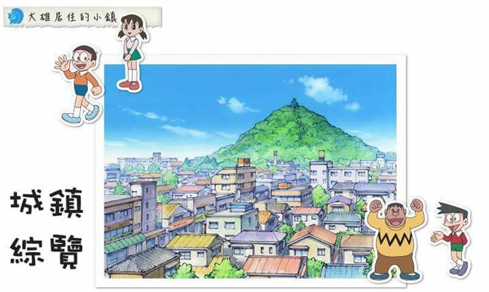

後山 |
 城鎮最高的山，就是後山 |
概述後山在學校後方，也就是圖中的高大綠地。雖然看起來很大，實際上並不是很大的，是社區裡難得的自然綠地。大雄非常喜歡這座山，只要發生了令他不愉快的事，除了睡午覺或是找哆啦A夢幫忙，他都會到後山來走走，躺在後山上睡午覺，感覺大自然的美景，是個不錯的享受。 後山也是十分有故事性的地方。當需要一個比空地還要大型的空間，或者要隱密的準備什麼計畫時，都會想到後山。在故事中，後山也常與提倡環保產生聯繫，例如在《動物行星》跟《綠之巨人傳》中，都有提到開發商企圖開發後山的計畫，後來因為大雄媽媽等街坊鄰居的努力，終究成功阻止開發。 在後山山頂有一顆高大的樹「千年杉」，靜香曾經為了爬這棵樹而和大雄換身體。 |